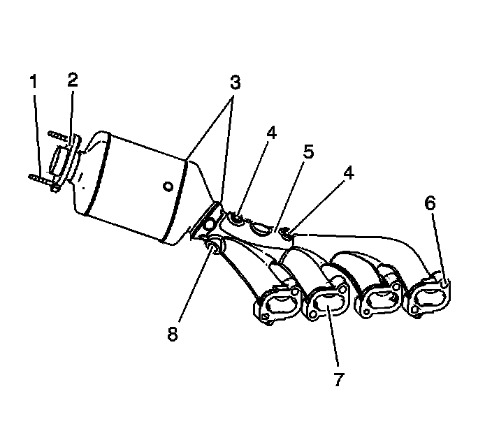
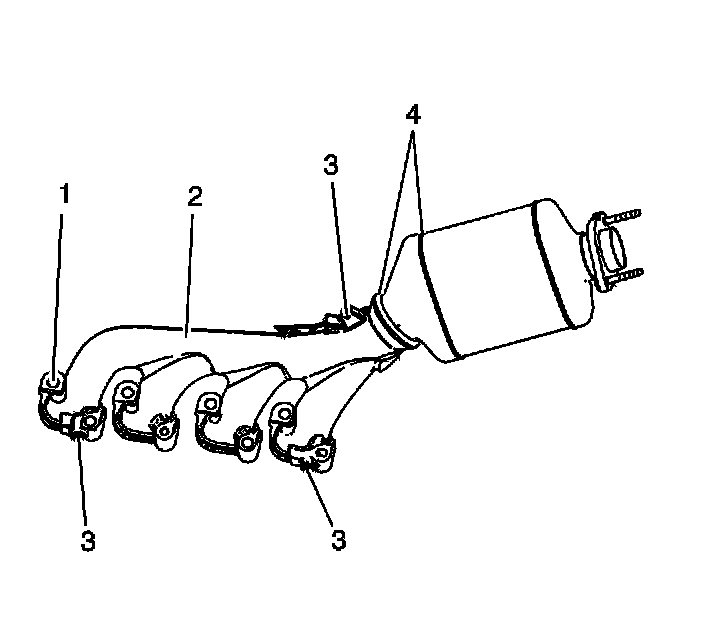
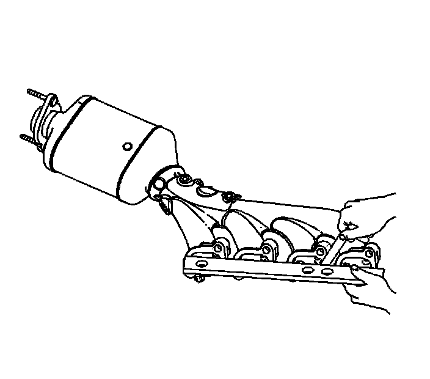

91. Exhaust Manifold Cleaning and Inspection - Right Side
Exhaust Manifold Cleaning and Inspection - Right Side
Cleaning Procedure
1. Clean the exhaust manifold in solvent.
Caution: Refer to Safety Glasses Caution (Safety Glasses Warning) .
2. Dry the exhaust manifold with compressed air.
Inspection Procedure

1. Inspect the right exhaust manifold and converter assembly for the following:
* Damage to the exhaust pipe mounting studs (1)
* Damage to the exhaust pipe flange (2)
* Damage or broken welds (3)
* Damage, loose or missing heat shield rivets (4)
* Damage, loose, missing heat shield (5)
* Damage to the exhaust sealing area (6)
* Damage or restrictions to the exhaust passages (7)
* Damage to the oxygen sensor threaded hole (8)

2. Inspect the right exhaust manifold and converter assembly for the following:
* Damage to the exhaust manifold mounting holes (1)
* Damage or excessive corrosion to the exterior (2)
* Damage to the heat shield mounting hole threads (3)
* Damage or broken welds (4)
3. Repair or replace the exhaust manifold and converter assembly as necessary.

4. Measure the alignment or surface flatness of the exhaust manifold flanges, using a straight edge and a feeler gage. Exhaust manifold surface flatness must not exceed 0.254 mm (0.010 in) out of alignment.
5. If the surface flatness is not within specifications, the exhaust manifold is warped and must be replaced.